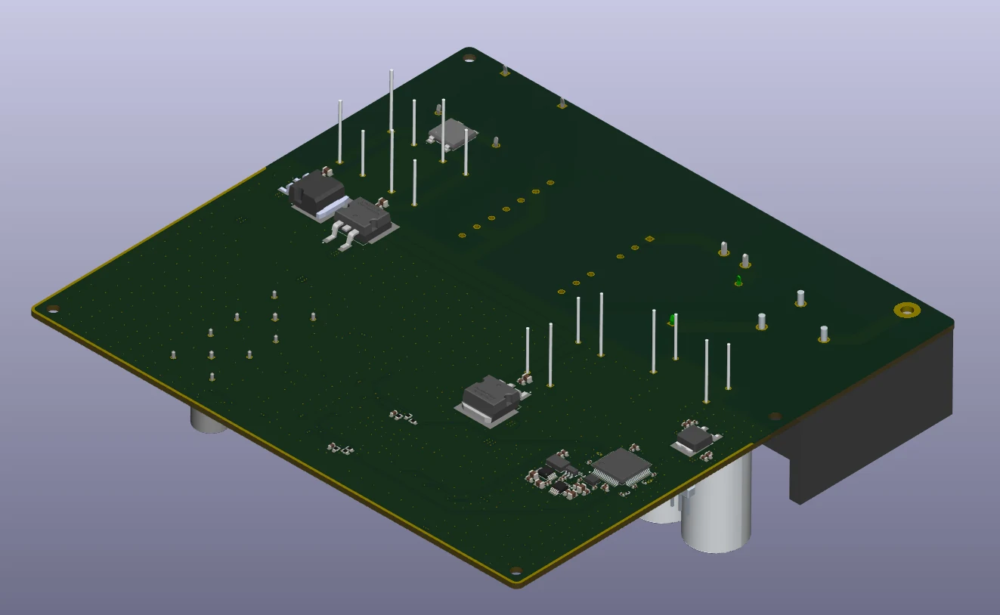
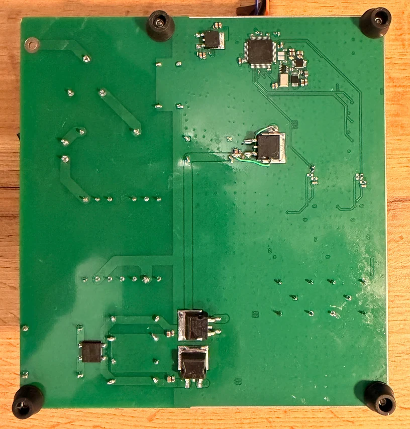
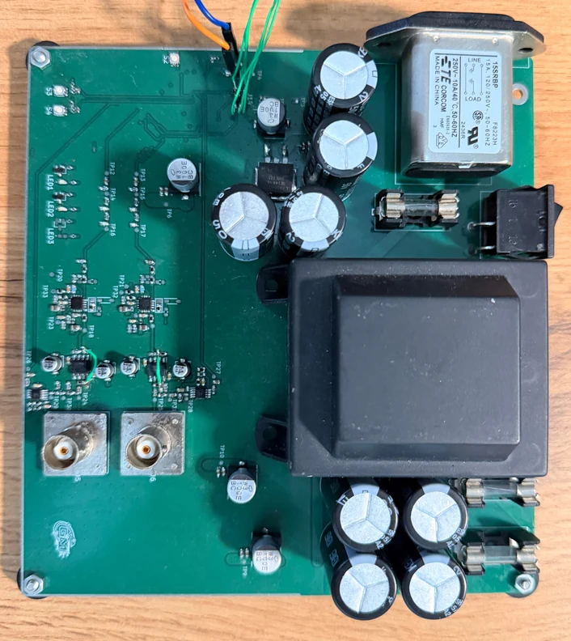

PROJECT 01 / PCB DESIGN / EMBEDDED
Waveform Generator
A programmable waveform generator built around Direct Digital Synthesis (DDS), STM32 control and a four-layer PCB.

01 / OVERVIEW
Making signals programmable.
The generator board was designed to produce programmable waveforms with digitally adjustable gain, amplitude and waveform shape. Its architecture combines the waveform-generation circuitry with a complete on-board power supply and STM32-based control.
Key design elements
- DDS-based programmable waveform generation
- Digitally adjustable gain, amplitude and output waveform shape
- Five voltage regulators, including circuitry for four symmetrical supply rails
- STM32 microcontroller for communication and waveform control
- Firmware developed for the STM32 control system
02 / GALLERY
Inside the design.
Selected 3D PCB views and photographs of the hardware.



NEXT PROJECTRadar Board
All projects ↗